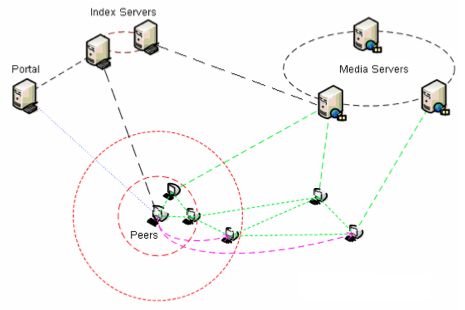

QQ Technology is a system developer and services provider for carrier-grade broad-band assurance. It gained the investments from IDG Technology Venture Investment and Mitsui Ventures. I joined QQ Technology in June 2006 as a Project Director and Software Architect to lead developing a peer-to-peer (P2P) video streaming system and the operations support system (OSS).
FireWind: A peer-to-peer video streaming system

About the system
FireWind P2P video streaming system is an integrable solution for video broadcast (TV) and video-on-demand (VOD) over Internet. Compressed video data is extracted from video files or real-time video streams by dedicated media servers, wrapped into slice packets, then fed into a peer-to-peer overlay network consists of users. The sliced video data are propagated among users on the need basis. The structure of the peer-to-peer overlay network and the strategy of sharing data are designed for the special needs of video streaming to ensure quick start and smooth playback. They are different from those in typical file sharing applications like Bittorrent.
FireWind IPTV system consists of P2P video streaming system and the operations support system (OSS). Its back end includes a contents publishing system and a video advertisements management system. Its front end includes a web portal (WebTV) and a client software running on HTPC (Home Theater PC).
Major Contributions
- Manage to develop a video on demand (VOD) system running on HTPC (Home Theater PC). Review designs, plans, and manage the development process.
- Manage to develop a WebTV system including web portal and web-based operations support system (OSS). Review designs, plans, and manage the development process.
- Develop a peer-to-peer video on-demand (VOD) system. Lead team to design architecture, program interface and framework, manage the development process.
- Develop a peer-to-peer video broadcast (TV) system. Lead team to design architecture, program interface and framework, manage the development process.
Technical Summary
| Languages: | C++, SQL, C#, ASP.NET |
|---|---|
| Operating systems and database: | Windows, Linux, MySQL |
| Compiler and debugger: | Visual Studio 2005, GCC/G++ |
| Video format: | ASF/WMV, RM/RMVB |
| Techniques: | TCP/UDP, Socket, Thread, ActiveX, OOD/OOP, Stream Media, Peer-to-Peer (P2P) |